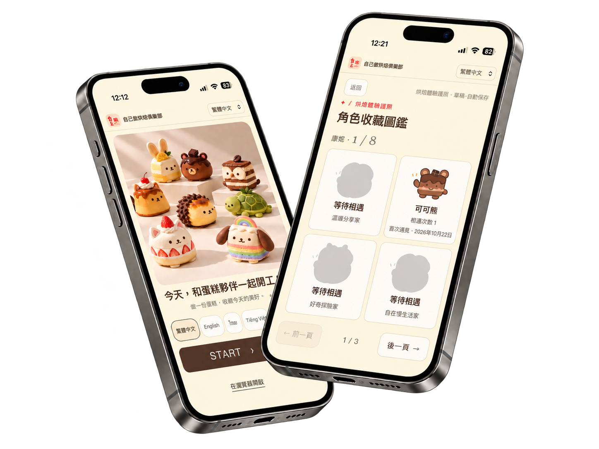
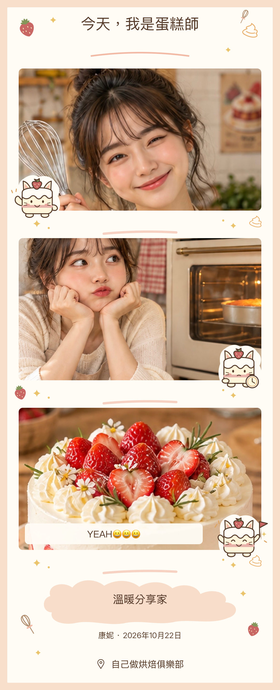

不大改既有流程也能創造新的顧客互動
第五組｜黃詩婷・蔡嘉安・康欣惠
從進店到成品完成，讓互動自然融入體驗
掃碼開啟、多語言菜單、雙語確認卡
製作前：開工紀念 Shot＋幸運抽籤烘焙等待時：趣味小測驗＋秘密拍照任務
成品照、角色揭曉、三格拍貼、收藏圖鑑
用手機掃描 QR Code，試玩烘焙體驗護照。
今天，和蛋糕夥伴一起開工！
從掃碼開啟體驗到完成拍貼收藏，一起看看烘焙體驗護照如何操作。
多語言資訊、跨語言協助與雙語確認卡，協助顧客理解甜點及服務內容，並與店員核對需求。
將 DIY 過程延伸為個人化拍貼與角色收藏，讓顧客有值得收藏、展示與分享的內容，並透過顧客的社群分享，觸及更多潛在消費者。
掃描 QR Code 即可開啟手機 Web App，無須下載；沿用原有 DIY 教學設備與現場服務。
讓不同語言的顧客都能輕鬆「自己做」，也讓更多人有機會一起「做伙做」。
